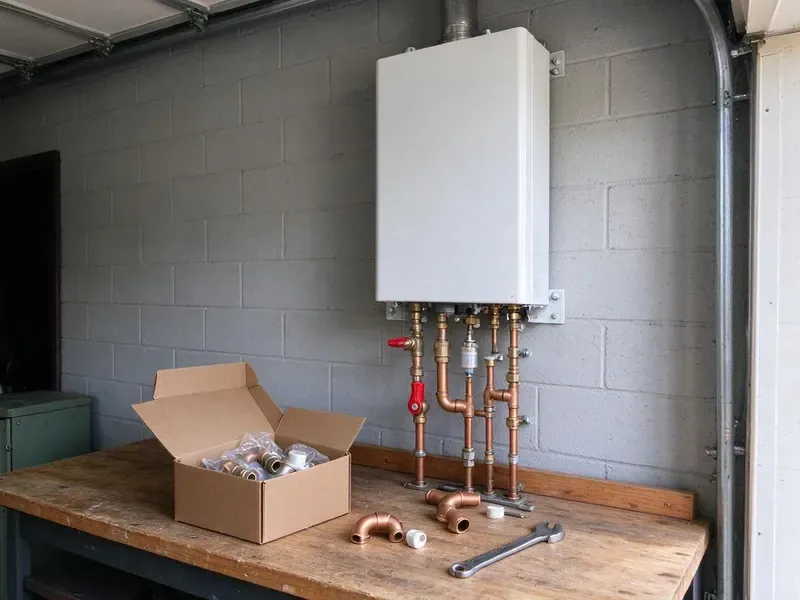

Water Softener Installation in Bismarck, ND
Our Bismarck, ND plumbers install softeners on existing loops or add a new loop for soft water through the house.
- Experienced North Dakota Plumbers
- Fast Local Service
- Free Hardness Test
- Workmanship Warranty

Need a Water Softener Installed in Bismarck, ND?
Every system is matched to your water and family size.
Water Softener Installation in Bismarck, ND
HPN Plumbing installs water softeners and conditioners that reduce calcium and magnesium. Water softeners and filters are popular around Bismarck because they extend the life of water heaters, dishwashers and faucets. Left alone, the minerals crust faucets, cloud glasses and settle in a hard layer at the bottom of the water heater. A quick test shows the level.
Work we handle every week:
- Every major brand
- Softener sizing by grain capacity
- Accurate hardness tests

Additional Plumbing Installation Services in Bismarck, ND
We install water heaters, pumps, lines, and fixtures across Bismarck, ND with precision workmanship that meets every local code.


Customers
Why Choose HPN Plumbing for Water Softener Installation in Bismarck, ND?
We install softeners that match your hardness and daily water use. You get soft water at every tap, reasonable salt use and fewer problems down the road. Metered valves save salt.
- Better Water, Soft water cuts mineral buildup and changes how water feels in the shower.
- Appliance Life, Shield your water heater, dishwasher and washer from mineral buildup.
- Clean Installation, Quality fittings and a bypass valve keep future service simple.
Citywide Coverage
Homes and condos throughout Bismarck are regular work for us. A pre-plumbed loop in newer homes makes installs faster.
Experienced Team
Our plumbers have installed many softener models in North Dakota homes. They handle basic setups and whole-house systems with filters alike.
Safety-First Approach
Our team works safely from start to finish. The result meets every rule that applies.
Trusted Certified Bismarck Plumbing Services Professionals
At HPN Plumbing, we are proud to offer certified plumbing services throughout Bismarck, ND. Those papers on the wall mean something. Our plumbers hold recognized industry credentials, and they follow strict safety and quality rules on every repair, installation and maintenance call we run.
Call Us Now PHCC Plumbing Contractor Recognition
PHCC Plumbing Contractor Recognition Better Business Bureau (BBB) Accreditation
Better Business Bureau (BBB) Accreditation Angi Certified Pro
Angi Certified Pro ISO 9001 Quality Management Certification
ISO 9001 Quality Management CertificationSoftener and Filter Installs in Bismarck, ND
Whole-Home Water Softener Installation in Bismarck
Whole-home softeners treat every gallon that enters the house, right after the main shutoff. Placing it on the main means the water heater, the dishwasher and every fixture get soft water, not just the kitchen. Sizing comes first. Your test result and water use decide the tank size.

Salt-Based Water Softener Installation in Bismarck
Ion exchange is the only method that truly removes hardness from water. Every salt-based install includes a sized resin tank, a brine tank, a bypass and a drain to an air gap. Then we program it. Regeneration time is usually set for 2 a.m.
High-Efficiency Water Softener Installation in Bismarck
High-efficiency softeners use upflow brining and metered valves to cut salt and water use. Compared with an older timer-based unit, a modern metered softener can use roughly half the salt and noticeably less regeneration water each month. The savings add up. Several models are available.
Water Softener Replacement in Bismarck, ND
Older softeners lose ground as resin wears out, valve seals leak or injectors clog. We remove the old unit and install a new metered model, then check the loop and drain line while everything is apart. Salt use drops. Performance comes back right away.
Water Softener Installation Cost in Bismarck, ND
Cost depends on the system type, its capacity and whether a loop already exists. Installing on an existing loop is faster and cheaper, while adding a new loop means cutting into the main and running pipe, which adds labor and fittings. Filters add cost. We put equipment, labor and setup on the quote.
Culligan Water Softener Installation in Bismarck
Culligan systems are common in homes around here, and we install and connect them. We follow Culligan's requirements for the drain, bypass and electrical, and we program the system for your tested hardness so it does not over-regenerate. We handle all of it. Existing loops make it faster.
Salt-Based Water Softener Systems in Bismarck, ND
Salt-based softeners use ion exchange, swapping calcium and magnesium for sodium on a bed of resin beads. HPN Plumbing sets them up with the right resin and brine tanks. A metered control valve regenerates only when needed, which keeps salt and water use down. Most effective option.

Water Softener Installation for New Construction in Bismarck, ND
Building a home in Bismarck, ND? New construction is the cheapest time to add a softener loop, because the walls are open and the main can be routed past the garage or utility room without cutting finished drywall. We work with builders. Hose bibs can stay on hard water.
Water Softener Installers Near You in Bismarck, ND
Local plumbers know local water, and HPN Plumbing has tested a lot of it. Years of tests around the area tell us which systems work and when iron or chlorine needs a separate filter. Calls get answered quickly.
Searching for water softener installation near me in Bismarck, ND usually starts with scale on a new faucet. HPN Plumbing keeps local crews close and test kits on every truck, so we can test your water on the first visit and often install the same week once you pick a system. Testing is free.
HPN Plumbing at a Glance
- Licensed and insured plumbers serving Bismarck, ND
- Same-day appointments and 24/7 emergency response
- Clear written estimates, no hidden fees
- 4.9-star rated by 408+ North Dakota customers
Bismarck Map
Bismarck Information
- Population
- 75,092
- Area codes
- 701/406/320
- Service area
- Bismarck and communities within 40 miles
- Nearby
- Mandan, Dickinson, Jamestown, Minot
Calcium and magnesium coat the inside of pipes and appliances over time, so a softener saves repairs in Bismarck, ND homes.
Expert Services
Reach out to HPN Plumbing for reliable plumbing work done by licensed pros in Bismarck, ND.
Our Specialized Plumbing Services in Bismarck, ND
At HPN Plumbing, you get every kind of plumbing service from one company across Bismarck, ND. From leak detection to full system installs, our team works fast and charges fair prices on homes and commercial properties alike. Explore our core services below:


Our Water Softener Installation Steps in Bismarck, ND
From the first test to the final setup, HPN Plumbing handles it in one visit in Bismarck, ND.
Request a Quote
Reach HPN Plumbing at (701) 403-1348 or by form. We talk through your hard water problem and schedule a consultation.
On-Site Assessment
A plumber visits your Bismarck home, tests hardness, checks the plumbing and explains your choices. You get a clear estimate.
Installation
Once you approve, we install the system, connect the drain and test it.
Frequently Asked Questions About Water Softener Installation in Bismarck
Water softener installation in Bismarck, ND usually runs $1,500 to $4,000. System type, brand, capacity and how much plumbing work the install needs all move the price within that range. Loops add cost. You get a written quote after we test.
Every one to two months is typical, depending on water use and hardness. A metered valve stretches each bag.
Soap scum on shower doors, dry skin, dull laundry and white scale on faucets are the classic signs. We can run a hardness test in your home to confirm it, usually in a few minutes with a simple kit at the kitchen sink. No charge for it.
On an existing loop, installs typically take two or three hours. Adding a new loop can take half a day or more.
Standard residential softener installs often need no separate permit. Major main line or drain changes can need one, and we let you know. Permits are on us.
Salt-based softeners add a small amount of sodium. An RO unit at the kitchen sink takes it back out.
Control valves usually carry about 5 years, and tanks often 10 or more. Our labor has its own warranty.
Fleck, Culligan, Ecodyne and Kenmore are some of the brands we install. Our plumbers walk you through the options and help you pick a model that fits your water, your household and what you want to spend. Fit matters most.
What Our Customers Say About Our Plumbing Experts

Mark T.
The floor drain in our office break room backed up every few weeks. The plumber ran a cable, then put a camera down and found roots at a joint about thirty feet out. Seeing it on the screen made the decision easy.
Drain Cleaning · Dickinson, ND
Rachel N.
Hard water was leaving white crust on every faucet and our dishwasher was struggling. The tech tested the water, recommended a softener sized for a family of five, and installed it with a bypass valve in one afternoon. The spots on our glasses are gone.
Water Softener · Bismarck, ND
Kevin O.
Before buying our house I paid for a sewer camera inspection. HPN Plumbing found a belly in the line that held standing water about forty feet from the cleanout. We used the video to get the sellers to fix it before closing.
Sewer Camera Inspection · Mandan, NDMarcus H.
Grease from the fryer line kept clogging the kitchen drain at my diner. HPN Plumbing hydro jetted the line after closing, showed me the buildup on camera, and set us up on a quarterly cleaning so it does not catch us on a Friday again.
Drain Cleaning · Minot, ND
Laura S.
Our 40 gallon tank started leaking from the bottom after thirteen years. The tech hauled the old one out, set a new unit with a fresh expansion tank, and had hot water running in about four hours. He took the old tank with him too.
Water Heater Replacement · Bismarck, ND
Tyler J.
We bought a taller comfort height toilet for my dad, who just had knee surgery. The plumber pulled the old one, found the flange was cracked, and replaced it before setting the new bowl. Took about two hours.
Toilet Installation · Minot AFB, ND